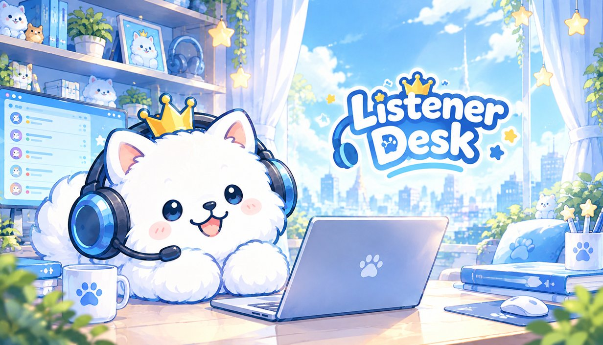
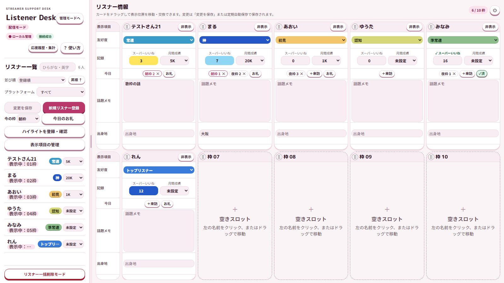
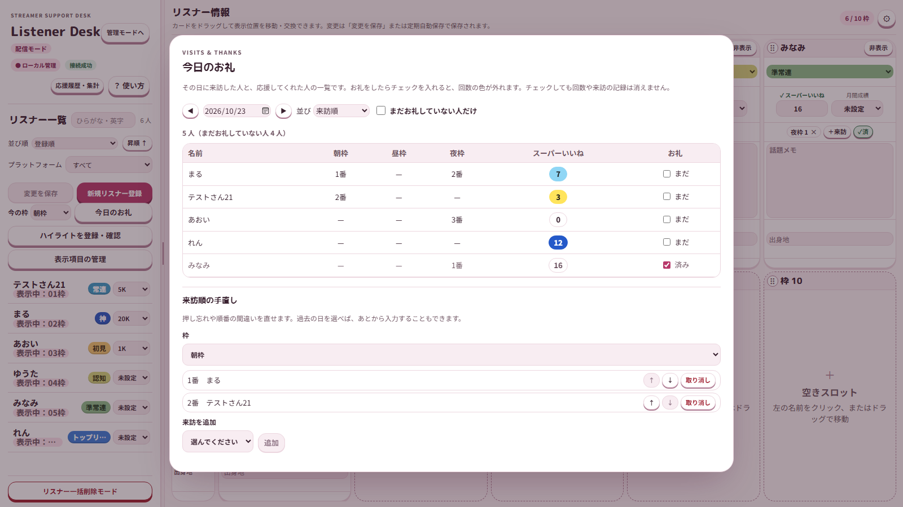
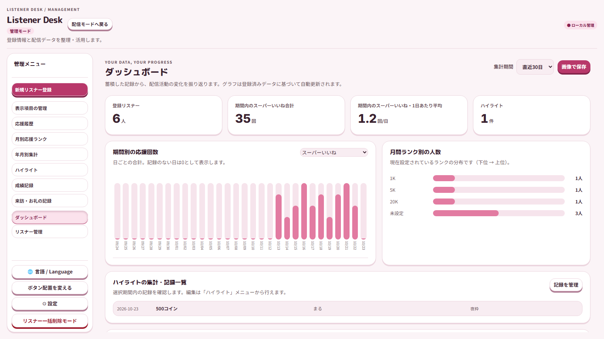

「あのときの話」を、ちゃんと覚えている配信へ。
覚えるのはアプリに。あなたは目の前のリスナーさんに。
Listener Desk は、配信中に横に置いて使う、リスナーさんの記憶帳です。来訪順・応援の回数・話題のメモをカードで記録し、配信のあとには振り返りもできる PC アプリです。
リスナー情報や記録は、お使いの PC の中だけに保存されます。アプリを使っている最中にネット接続は求めません。別の PC へ移すときや万一に備えて、バックアップ機能（好きなフォルダへの保存と、1日1回の自動バックアップ）をご利用ください。
できること
配信中は「配信モード」、配信の前後は「管理モード」。2つの画面で、リスナーさんとの時間を支えます。
🗂 リスナーカード
最大30枚のカードに、名前・友好度・応援の回数・月間成績・自分で作った項目（話題メモ、誕生日など）を表示。ドラッグで並べ替えられます。
🚪 来訪記録
「＋来訪」を押すだけで、今の枠（朝枠・昼枠・夜枠など）で何番目に来てくれたかを記録。押し間違いは取り消し・入れ替えできます。
💌 今日のお礼
その日に来てくれた人・応援してくれた人を一覧に。お礼をしたらチェックを入れると色が外れ、「まだお礼していない人だけ」で残りを確認できます。
🎨 応援回数の段階色
その日の応援の回数に応じて、カードの回数欄に色が付きます。色と回数の区切りは自由に変えられます（オン／オフ可）。
📊 ダッシュボードと画像保存
応援の推移や月間ランク別の人数をグラフで振り返り。SNS に載せやすいサイズで画像保存でき、リスナー名を伏せる設定が最初からオンです。
📝 成績記録と Excel 出力
配信後の数値（最大同時視聴者・コメント数など、すべて任意）を記録して月別に振り返り。応援の記録や特典の配布チェックリストを Excel に出力できます。
🎀 選べるテーマ
かわいい系／クール系 × ライト／ダーク、質感は「ぷにぷに・ふわふわ・カッチリ」。色も自由に変えられます。使わない機能はボタンごと隠せます。
🛟 バックアップ
手動バックアップ、起動時の自動バックアップ（1日1回・最新7個）、復元前の自動退避。大切な記録を守る仕組みを用意しています。
今後、効果音（SE）やスケジュール作りの拡張機能を別売りで追加していく予定です（内容と時期は決まりしだいお知らせします）。
画面
画面の名前やデータは、説明用の架空のものです。



対応している言語
- 日本語
- English
- 简体中文
- 繁體中文
- 한국어
- Español
- Português (Brasil)
- Deutsch
- Français
- Bahasa Indonesia
- ไทย
- Tiếng Việt
翻訳でおかしなところがあったら、こっそり教えてね (*ﾉω・*)ﾃﾍ
動作環境
| OS | Windows（64bit）／ macOS 11 以降 |
|---|---|
| ネット接続 | アプリを使っている最中は不要です（Steam での購入・ダウンロード・更新には必要です）。 |
| データの保存先 | お使いの PC の中だけ（クラウド同期なし） |
| 配信サービス | どの配信サービスでも使えます。配信サービスとの自動連携はなく、来訪・回数・メモは手で入力します。 |
よくある質問
クラウド同期はありますか？
ありません。データはすべてお使いの PC の中に保存されます。
別の PC でも同じデータを使えますか？
バックアップファイルを保存して、別の PC で復元すれば使えます。自動で同期はしません。
配信中に回線の負担になりませんか？
アプリ自体は通信をしないので、配信に使う回線の帯域を使いません。
スマホだけで使えますか？
使えません。Windows または Mac の PC が必要です。
配信サービスのコメントや来訪を自動で取り込めますか？
自動の取り込みはありません。そのぶん、どの配信サービスでも同じように使えます。